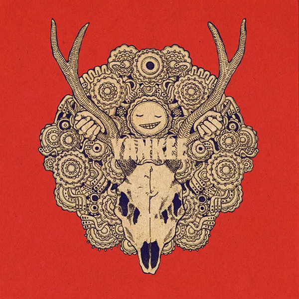
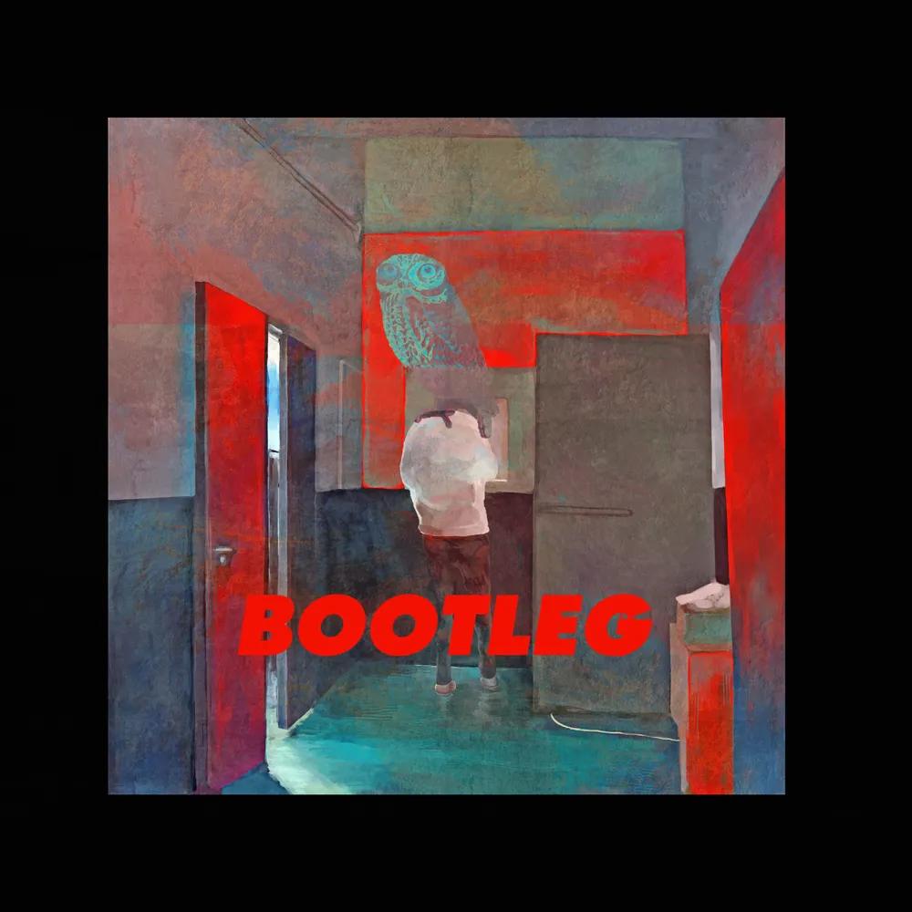

album
single
digital
physical

The 1st Album
diorama
2012.5.16
| 1. | Machi |
| 2. | Go Go Yuureisen |
| 3. | Dagashiyashoubai |
| 4. | caribou |
| 5. | Amefuri Fujin |
| 6. | Disco Balloon |
| 7. | vivi |
| 8. | Toy Patriot |
| 9. | Koi to Byounetsu |
| 10. | Black Sheep |
| 11. | Hikarabita Bus Hitotsu |
| 12. | Kubinashi Kankodori |
| 13. | Shinzou Houei |
| 14. | Shouhon |

The 2nd Album
YANKEE
2014.4.23
| 1. | Living Dead Youth |
| 2. | MAD HEAD LOVE |
| 3. | WOODEN DOLL |
| 4. | Eine Kleine |
| 5. | Melancholy Kitchen |
| 6. | Santa Maria |
| 7. | Hanani Arashi |
| 8. | Umito Sanshouuo |
| 9. | Shitodo Seiten Daimeiwaku |
| 10. | Ganpuku |
| 11. | Horafuki Nekoyarou |
| 12. | TOXIC BOY |
| 13. | Hyakki Yakou |
| 14. | KARMA CITY |
| 15. | Doughnut Hole (COVER) |
The 3rd Album
Bremen
2015.10.7
| 1. | Unbelievers |
| 2. | Fluorite |
| 3. | Saijyouei |
| 4. | Flowerwall |
| 5. | Atashiwa Yuurei |
| 6. | Willowisp |
| 7. | Undercover |
| 8. | Neon Sign |
| 9. | Metronome |
| 10. | Ameno Gaironi Yakouchuu |
| 11. | Cinderella Gray |
| 12. | Mirage Song |
| 13. | Hopeland |
| 14. | Blue Jasmine |

The 4th Album
BOOTLEG
2017.11.1
| 1. | Hien |
| 2. | LOSER |
| 3. | Peace Sign |
| 4. | Sunanowakusei |
| 5. | orion |
| 6. | Kaijyuunomarch |
| 7. | Moonlight |
| 8. | Shunrai |
| 9. | fogbound |
| 10. | Number Nine |
| 11. | Alice |
| 12. | Nighthawks |
| 13. | Uchiagehanabi |
| 14. | Haiirotoao |

The 5th Album
STRAY SHEEP
2020.8.5
| 1. | Campanella |
| 2. | Flamingo |
| 3. | Kanden |
| 4. | PLACEBO |
| 5. | Paprika |
| 6. | Uma to Shika |
| 7. | Yasashii Hito |
| 8. | Lemon |
| 9. | Machigai Sagashi |
| 10. | Himawari |
| 11. | STRAY SHEEP |
| 12. | Decollete |
| 13. | TEENAGE RIOT |
| 14. | Spirits of The Sea |
| 15. | Canary |

The 6th Album
LOST CORNER
2024.8.21
| 1. | RED OUT |
| 2. | KICK BACK |
| 3. | MARGHERITA |
| 4. | POP SONG |
| 5. | Shinigami |
| 6. | Mainichi |
| 7. | LADY |
| 8. | Yumeutsutsu |
| 9. | Sayonara, Mata Itsuka! |
| 10. | Tomaremiyo |
| 11. | LENS FLARE |
| 12. | Tsuki Wo Miteita |
| 13. | M87 |
| 14. | Pale Blue |
| 15. | Garakuta |
| 16. | YELLOW GHOST |
| 17. | POST HUMAN |
| 18. | Chikyugi |
| 19. | LOSR CORNER |
| 20. | OHAYO |